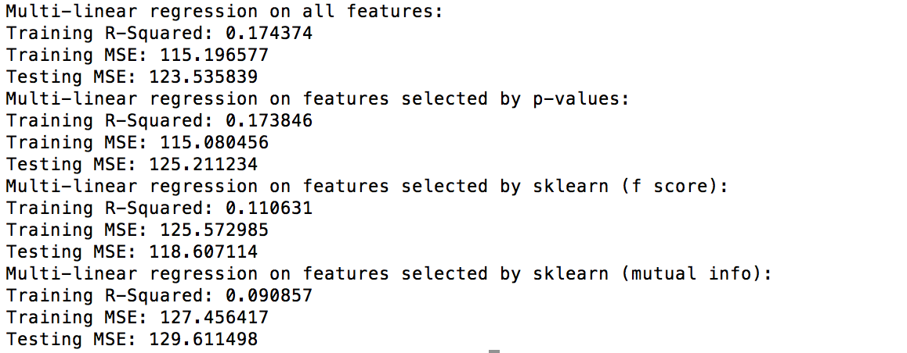

Vision
Our Big Idea
Inspired by the recent measles outbreak in Washington, we were
curious about what might lead to non-vaccination. Our goal was then
to investigate the different factors that may affect vaccination rates,
on a county level as well as a school-specific level. Some of the factors
we analyzed include urban influence, unemployment rate, median
household income, education level, student absent rate, racial and
gender demographics.
Our Hypotheses
- Schools in areas with higher median incomes have lower overall vaccination rates
- Schools with more high school graduates have lower overall vaccination rates
- Schools with a larger white population have lower overall vaccination rates
- Religious preferences are one of the main factors that make students choose not to get immunizations
Our Progress
While we did manage to analyze the relationships between the
aforementioned factors and school vaccination rates, we did not find
a strong relationship between certain factors and immunization rate for
each school to build a regression model of good performance. Namely,
when we visualized the correlation heatmap between vaccination rates
and some chosen county-level demographics, there was neither a strong
direct nor strong inverse relationship (correlation value was close to 0).
We then attempted to do single linear regression between overall
vaccination rate and the county-level and school-level data; however,
while there was improvement over the baseline (a dummy predictor
that always predicts the mean), the MSE was still quite high while the
R-squared values were quite low (highest was 0.0698) suggesting that
the models were not a good fit.
Still, we tried running a multiple linear regression. We first trained
the model with all the features, created a table with the statistics
for each feature, and then chose the features with a p-value less than
0.05. This ended up being high school degree percent, child poverty
percent, employment rate, median household income, white population
(county and school level), school grade span, number of free/reduced
meals, total absence percent, low income absence percent and school
district. These chosen features then covered many aspects of a school:
financial, educational, geographical and demographic factors. The
multiple linear regression model still was unable to be a good fit
for the data (R-squared value at 0.17), so we were unable to conclusively
find particular features that definitively affect a school’s vaccination rate.
One potential reason for these insignificant results is that our dataset
did not include private schools, nor did it include specific religious
demographics (other than the number of students who explicitly exempted
their vaccination based on religious reasons, which overlooked student
hat are influenced by their religious affiliation but choose to not
receive it without explicitly stating the religious concerns). Both
have historically been large factors in a population’s decision to
vaccinate or not. Future work should aim to include these types of data.
However, through analyses such as T-test and clustering, we do find
that certain factors do have an impact on the vaccination rate, in
particular racial demographics and the general financial and educational
level of the area.
Data
Our Data
Our data contains K-12 school vaccination data from the state of
Washington from the 2014-2015, 2015-2016, and 2016-2017 school years,
county-based data and school-based data. For county-based data
specifically, we had the following:
- rural_urban: Rural-Urban Continuum Codes that classifies metropolitan counties by the population size of their metro area, and nonmetropolitan counties by degree of urbanization and adjacency to a metro area.
- high_school_degree_percent: percentage of residents in a county that receive high school degrees.
- politics: percentage of people in a county who voted for the Democratic Party in the previous Presidential election. (From 0 to 1, 0 being more Republican-leaning, and 1 being more Democratic-leaning)
- percent_pov_child: percentage of children in poverty in a county.
- percent_pov_all: percentage of people in poverty in a county.
- employment_rate: the employment rate in a county.
- med_household_income_2017: median household income in a county.
- white_county: percentage of white people in a county.
For school-based data specifically, we had the following:
- white_school: percentage of white people in a school.
- grade_span: grade span for each school.
- male_percent: percentage of male students in a school.
- num_free_reduced_meals: free/reduced lunch enrollment in a school.
- total_percent_absences: percentage of absences in a school.
- low_income_absence_percent: percentage of absences of low income students in a school.
- school_district: school district that a school belongs to (transformed using label encoder)
- religious_exempt: number of students in a school that are exempt from immunization for religious reasons.
- personal_exempt: number of students in a school that are exempt from immunization for personal reasons.
- medical_exempt: number of students in a school that are exempt from immunization for medical reasons.
Data Relevancy
Despite a large number of data entries, the information contained
within it wasn’t the most useful. We were unable to get a good fit
with the regression model, suggesting that there wasn’t enough relevant
data within our dataset. Likewise, we had the vaccination data for
three different school years, which led to a large size, but realistically
the vaccination data did not vary greatly over these three years.
In addition, we had the breakdown of different types of vaccinations
(e.g. varicella, MMR, etc.), but most of the vaccination rates were
highly correlated with each other, suggesting that many students either
got all their vaccinations or got none at all. At the same time, none of
the private school vaccination data was available, so while our overall
dataset was quite large, the data itself was not the most interesting and relevant.
Data Completeness
We collected our vaccination data, county data and school data from sources such as data.gov, the State of Washington, and the USDA government website. We first read in all the data from CSVs, cleaned the data by getting rid of outliers or duplicate data, and stored the relevant data in SQL tables. Then, we performed a SQL query that joined all of the county, vaccination, and school data together based on school and what county/school district the school was in. We wrote the result of the SQL query to another CSV file. This is the CSV file that we used for our ML/stats analysis and visualizations.
Methodology
We first used scatter plots to explore the immunization data with respect to various demographic datasets. These comparisons showed the possibility of some relationships between the immunization data and certain demographics, although the results were inconclusive. Thus, we performed a series of stats/ML analyses as well as visualization analyses to find more meaningful results. We use different techniques for each part to pick apart the data (detailed in each specific sections), but in summary they include splitting into tiers based on medians, selecting features using p-values and sklearn’s feature selection method based on f-score and mutual information, and using features that we find meaningful through our already-performed analyses.
Machine Learning & Statistical Analysis
We have two distinct statistics and Machine Learning analyses. In both analyses, we use different county-level and school-level data as features, and the immunization rate for each school as the label. For the list of features included, please refer to “Our Data” section.
T-test Statistical Analysis
To find features that might have an impact on the immunization rate, we split the dataset into 2 tiers by the 50 percentile of the immunization rate, and performed T-tests on each feature from two tiers. Our null hypothesis for each t-test is that the specific feature does not have a difference in mean between the high-immunization-rate tier and low-immunization-rate tier. We point out the features that have a one-tail p-value lower than 0.005, which means the data we observed would only occur 0.5% of the time assuming the null hypothesis is true, which means there is a strongly statistical significance for us to reject the null hypothesis and interpret that there is a significant difference in mean of this feature between the two tiers. Thus, we interpret these features might have an impact on the immunization rate for each school.
The features that achieve a one-tail p-value lower than 0.005 are:

From the result, we see that demographic data has greater impact on the result, specifically population of white students in schools and number of religious exemptions. Other educational information also demonstrated strong statistical significance, such as the percentage of people receiving high school degree in the county and grade spans for schools.
Based on the p-values, the mean of the percentage of people receiving high school degree in a county and the percentage of white students in a school is larger in the low-immunization tier with strong statistical analysis, which corresponds to our hypotheses. However, the mean of the number of religious exemptions for immunization is lower in the low-immunization tier, contradictory to our assumption that religious concerns is a major reason for students to decline immunization.
ML Regression Analyses
We performed a series of Machine Learning analyses, including linear regressions, SVM regressions (with polynomial and RBF kernels), and neural network regressions. Our main goal of the analyses was to create a model, using various information (features) that we gathered, to identify important features and to predict the immunization rate for each school.
Because we split our data set to fit the models, our results for the models were averaged values across several runs of the models.
To begin with, we used a dummy regressor that always predicted the mean of the label, which produced a baseline for our following results. The result is attached below:
Based on the result, although the mean squared errors for each model’s test data had shown improvement compared to the baseline, all results had really low R-squared values, meaning that the models could not effectively predict the label. Among the features, single linear regression models for white_county, white_school, and num_free_reduced_meals had higher R-squared values as well as a lower MSE on the testing data, implying that racial composition and financial condition of students in a school may have more impact on the immunization rate of schools.
After performing single linear regressions, we then performed multiple linear regressions, with the following 4 ways of choosing the features:
- We passed in all the features to train the model
- We created a table with statistics for each feature, and chose the data with a p-value less than 0.05. The features that we chose included: urban_influence, high_school_degree_percent, percent_pov_child, politics, employment_rate, med_household_income_2017, white_county, white_school, grade_span, num_free_reduced_meals, total_percent_absences, low_income_absence_percent, school_district, religious_exempt, medical_exempt, personal_exempt. Based on the p-values, the features included multiple aspects, including financial, educational, geographical, religious, and demographic variables.
- We used scikit learn’s SelectKBest class to find the five best features based on F-value between features and labels (which captures only linear dependency). The features included religious_exempt, white_county, white_school, personal_exempt, and num_free_reduced_meals, which featured financial, racial, and religious variables.
- We used scikit learn’s SelectKBest class to find the five best features based on mutual information for a continuous variable (which captures both linear and nonlinear dependency). The features included personal_exempt, percent_pov_child, med_household_income_2017, white_county, and school_district, which featured financial, geographical, and demographic variables.
The results for the 4 models are attached below:

Multiple linear regressions demonstrated better results compared to single linear regressions, and the most effective model is the one which all features were considered. However, features selected with F score generated lower errors which preserved the performance of the model, which is reasonable because the method of linear selection used focused on linear dependency.
Because the most significant features we selected using F-test and mutual information differed, we suspected that non-linear regression models might generate better performance, since F-test only checked linear dependency while mutual information captured the general dependency of the variables. We use SVM Regression model with a RBF kernel and a polynomial model to perform non-linear regressions, and the results are demonstrated below:
According to the result, the SVM regression model based on features selected using mutual information had a high R-squared value and low MSE, but not outperforming multiple linear regression, meaning that non-linear model does not necessarily fit the data better.
We also implemented neural network regression model, another non-linear model, to compare the results:
Surprisingly, the features selected using f-test outperformed other feature selections. This was probably due to the more linear aspect of the linear layers of the neural network. The result gave us the lowest MSE on the testing data, but had similar performance in general compared to SVM models.
Through different ML models, we also found that linear models gave a better prediction performance compared to non-linear models, while the general performance could not give us an effective prediction model, which might be because we did not have enough data to cover different determinants, or because the relationship could not be modeled in a deterministic way.
However, through the usage of feature selection methods and comparison of results given by different ML models, we found that white_school was the most significant feature using f-test, and school_district was the most significant feature using mutual information. The general result from feature selection indicated that racial component and financial conditions are valuable features to model the value of immunization rate.
Visualization
We used a variety of visualization techniques to present the results of our analysis.
Scatterplot & Best Fit Line Visualization
To examine the impact of each features, we also created scatter plots for each feature and plotted the best fit lines for each dataset. Specifically, we grouped the data based on school districts to reduce the number of data points to make it visually clear, and split the data into two tiers by the median value of each feature and then ran separate single linear regressions on each half (feature value as inputs and immunization rate as labels). We then plotted the results from that analysis as a two-tiered linear regression plot, with dots and the best fit line for each tier with a specific color. Among the plots we created, we can see that number of free reduced meals, number of white students, and percent of people in poverty for each school district had demonstrated clear difference between the two tiers in terms of their distribution and the slopes of the best fit line, showing that they may have an impact on the immunization rate.
Clustering Scatter Plot
We used k-means clustering on different combinations of features in order to visualize our data. We used our cleaned and consolidated data and grouped the school data by school district. Then, we chose different combinations of features to try doing k-means clustering on in order to see what interesting results there might be and what clusters of data there were. Then, we visualized the clusters by graphing a 3D scatter plot. Two interesting results were median household income of the county + % white students at school + immunization rate at the school, and % of child poverty of the county + # religious exemptions at the school + immunization rate at the school.
Map Visualization
We also visualized each county demographic on a map of Washington in order to explore the geographic variation in the data and look for possible patterns in the spatial orientation of each county. We used Tableau to create a heatmap overlay over the mapped county coordinates and perform visual comparisons of the county-level demographic data and immunization data averaged by county. The counties of Grey’s Harbor, Walla Walla, and Pend Oreille were removed due to insufficient immunization data for these locations. Although we found no significant correlation between the the geographic spread of the data and our immunization dataset, we cannot rule out the influence of geography on the immunization data due to the generality of our data. We were unable to map more granular data due to lack of access to spatial files of school districts and school addresses, but there is a possibility that more specific data will show a geographic relationship in our data.
View Visualization Here:
Map Visualization
Immunization Data shown on left and comparison map shown on right
Correlation Heatmap
For the final correlation heatmap, we first made two intermediary heatmaps: one for just the county-level data and one for the vaccination data. For the county-level data, we looked to see highly correlated factors (e.g. overall poverty percent and child poverty percent), in order to select factors that were not redundant for the final heatmap. This resulted in the following county-level data features in the final correlation heatmap: urban_influence, high_school_degree_percent, politics, percent_pov_all, employment_rate_2017, med_household_income_2017, and whiteAlone (i.e. white only, no Hispanic/Latinx, in contrast to white which did contain that population). For the vaccination data, we did a similar technique of generating an intermediary vaccination only heatmap to see which factors were highly correlated. We found that diphtheria, pertussis, MMR, polio, hepatitis B all had high correlation (0.91-0.97), so we chose to include only the MMR vaccination rate to represent all these vaccination rates (given its relevancy in the media) in the final heatmap. Varicella had a lower correlation to the other vaccination rates (0.55-0.57), so we also included it in the final heatmap.
Finally, we also included the overall vaccination rate, as they did not appear to be highly correlated with any of the individual vaccination rates (-0.27 to -0.42), so we also included this in the final heatmap. As a result the final correlation heatmap contained the aforementioned county demographics and some representative vaccination rates (overall, MMR and varicella).
Results
Despite not being able to find a well-fitting regression model, we did find that some factors had a larger influence on school vaccination rates. Based on all of our different analyses (whose specific results and interpretations can be found in their corresponding sections), racial demographics seemed to have the highest impact on vaccination rates among all the different data features. Number of religious exemption, although not directly reflecting the religious demographics of the schools, also seemed to indicate the impact of the religious factor on school immunization. The economic informations of a county and a school (such as number of students having free reduced meals and percent of children in poverty) also appeared to have a stronger relationship to vaccination rates, but again more detailed school-specific financial data would be needed to confirm that the financial situation of a county/school would impact the vaccination rate. However, as mentioned above, future work would need to be done in order to find more relevant data (private school data, religious demographics, etc.) that may lead to a model with better performance.
Based on the results from our visualization and stats/ML analysis, we discover trends corresponding to our hypotheses about the relationship between racial demographics, financial and educational conditions of schools and the immunization rates, in that schools with more white students in an area with more well-off and high-education population tends to have a lower immunization rate. However, contradictory to our prediction, although having a significant influence, schools with higher number of religious exemptions actually have higher immunization rate. There are certain possibilities that lead to this result: 1) the data we acquire does not contain private and religious school data, which might showcase a different trend; 2) our data does not contain feature for indicative of the religious influence, such as the specific religious demographics of schools; 3) our predictions are based on common stereotypes and media reports, which might not reflect the general trend. As mentioned above, future work would need to be done in order to find more relevant data (private school data, religious demographics, etc.) that may lead to a model with better performance, and apply our analysis to areas other than Washington to examine if the discovery in our current study is applicable to other regions.